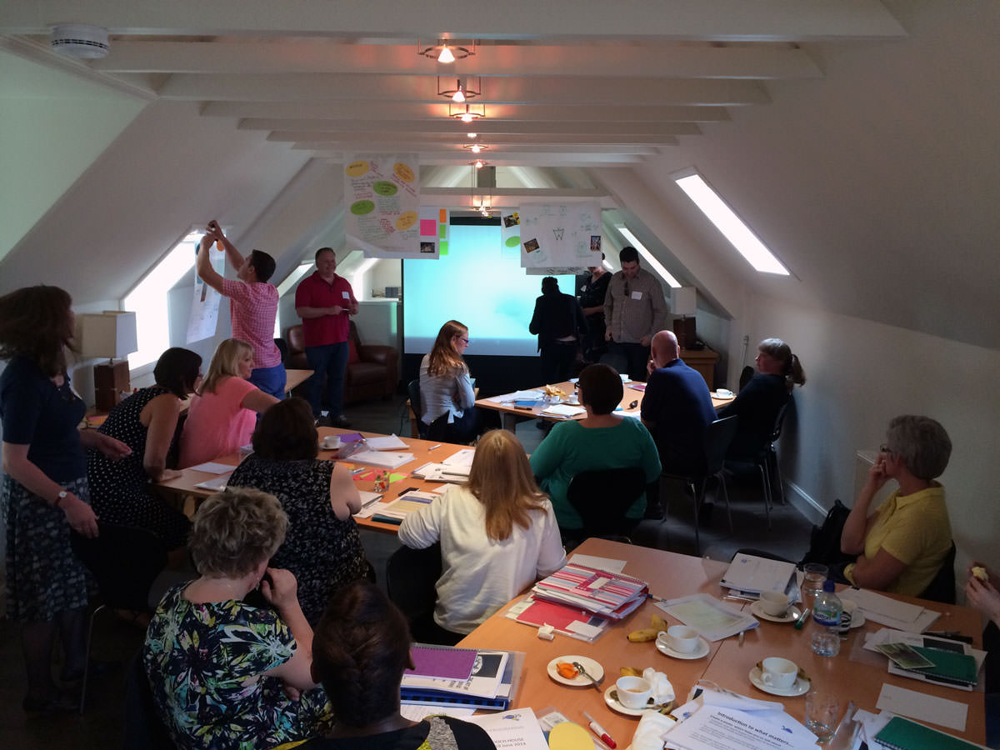
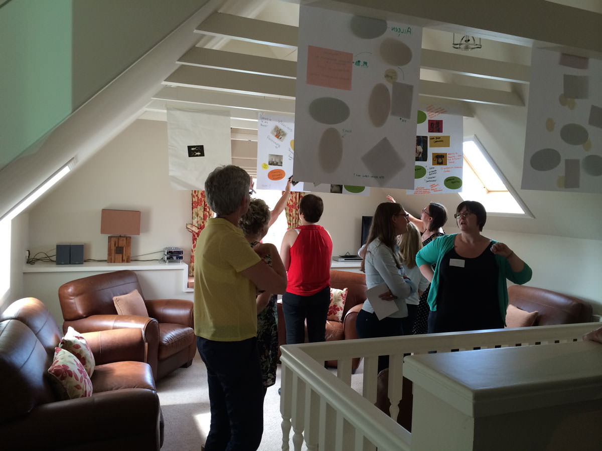

Effective leaders need to know themselves, be themselves and look after themselves. The most effective leaders of the future will be those who can adhere to this and the most effective organisations will be those who can enable their leaders to achieve this.
Ultimately leadership is about engaging with people to harness good ideas, create a shared vision and find creative ways of solving problems. Any management style or strategy that does not take account of this will not be fit for the future.
Dare to experiment. Allow things to change. Be happy not to be in control Take a chance!
ITF Leaders for the Future
As part of the Imagining the Future project, IRISS invited nineteen people who believed they would have leadership roles by 2025 to come together as a ‘temporary leadership team of the future’. The group spent three days together at Loch Lomond, immersed in the four scenarios, exploring systems leadership theory and ideas. Delegates came from a mix of background and the group was balanced, with representation from the statutory sector, independent sector and the third sector.

As a tool, the scenarios were used to enable the group to consider the challenges and opportunities they may face as leaders within their organisations and how they might prepare to meet uncertainty. Indeed, they were able to think about the nature of leadership in 2025.
This was supported and underpinned by leadership theory which drew heavily on thinking from whole systems and complexity theory alongside models of adaptive and collaborative leadership. For example the leadership programme drew on the thinking of Margaret Wheately - working in complex systems and taking up the role of leader as host; Rittell and Webber - distinguishing between different types of problems eg Wicked and Tame; the work of Keith Grint who developed the notion of critical and messy solutions in relation to leadership authority; and the work of Ralph Stacey who distinguished between different leadership and management approaches depending on the extent of ambiguity and certainty in the environment and in the leadership task.
These approaches and the leadership practices associated with them were thought to be useful for leaders in relation to the scenarios, set in 2025, in the context of:

These aspects of systems thinking and leadership practice were built into the programme and explored as both theoretical concepts and practical tools for change. These are reflected in participants understanding of their current and future challenges as well as their application of learning about how to build a new future for social services and communities in Scotland.
By the end of the three days, each ‘future leader’ had developed an individual, or group, BIG experiment to try out in their own day-to-day roles within their own organisations. Four months on, delegates reflect on what they have learned along the way as leaders, for their organisations, and for social services more generally.
The BIG experiments covered a number of specific themes and areas within social services:
I have been enlightened by the idea of leadership at all levels. Having set out an outline for integrating occupational therapy services with colleagues in the NHS and social work, I have now been enabled to reflect on the work already taking place at a practitioner and assistant practitioner level. The ownership of change and innovation at all levels, as well as engagement with people who use services, is an important driver for any of the future scenarios.
The ability to promote creativity at all levels within the organisation and at the same time learning from multiple perspectives - accepting and at times challenging difference - is I feel important to future leadership.
Therefore, the message I want to share with others is to be yourself, to allow disagreement, manage conflict and promote leadership at all levels.
Occupational Therapy services are predominantly split between the NHS and local authority. At times there appears to be an assumption that all occupational therapy services are generic and offer the same level of expertise and service, despite the specialisms of services. The Public Bodies (Joint Working) (Scotland) Act 2014 gives strong leverage towards a future world of fully integrated services: a fully integrated world. The challenge of this is not to simply conceive this in a purely structural and organisational sense, but to imagine integration of occupational therapy within a future world where it is recognised that everyone at some point during their life will require some kind of care and support.
Enabling occupational therapy services to exist in a future New Normal World where it is the norm for people to approach and collaborate with occupational therapy services to seek joint solutions and empowerment to engage in meaningful occupation which is important to them.
An initial outline of supporting integration of occupational therapy services across adult social work and NHS including acute, community and mental health services was written between NHS and social work occupational therapy managers for consideration by senior managers in the NHS and social work. The outline acknowledges the long history of joint working across services, but also acknowledges that there are occasions when duplication can occur.
The key objective of occupational therapy in the New Normal World is to develop a streamlined, equitable and accessible model of occupational therapy. The model, no matter of the person’s age or type of need, will support and empower people to make informed decisions as to the range of options available to them to achieve their desired outcomes through engagement in meaningful and fulfilling occupation that is right for them. This will maximise occupational and functional independence to support early intervention, prevention and self-management to enable earlier lifestyle decisions to maintain health and wellbeing, as well as enablement and rehabilitation.
For occupational therapy to exist and thrive in the New Normal World there needs to be a change, an innovative approach to further developing citizenship. A move from professional autocracy is required if occupational therapists are to further enhance their skills in teaching people strategies and skills for coping with life. The New Normal World will be one in which all assets of people and the community can be utilised through partnership and creativity to enable meaningful occupation. All people are treated as equal, and central to this is recognising the uniqueness and spirit of each person, which is core to occupational therapeutic engagement.
Occupational therapy in the New Normal World will maximise all available enabling and emerging innovative technologies, including computers, electronics, environmental controls, wheelchairs and developing robotic devices.
Very quickly it became apparent that the initial outline needed to be adapted. There were conflicting views and opinions from others as to how occupational therapy services should be organised and delivered in the future. These views ranged from a clear merge of services into an integrated structure to developing a common model and approach across the occupational therapy services without structural integration.
The ITF leadership approach enabled me to view the different views and perspectives of others in a much more positive and constructive way. I have learnt importantly that allowing disagreement and managing at the same time conflict has been an area of growth for me. This coupled with knowing and trying to be myself has given me additional resilience for dealing with conflict and change; especially the interplay between assertiveness and co-operativeness.
Understanding of this within the living systems paradigm enabled me to reflect on what was happening anyway within occupational therapy services. Thinking about the small, but emerging integration work that practitioners and assistant practitioners from across the NHS and social work had already started in one local area, that they were now repeating constantly, starts to demonstrate that change and self organisation, together with leadership, adaptability and innovation at all levels is an important aspect of future services.
The initial outline of supporting the integration of occupational therapy services is a complex issue. The emerging work from practitioners mentioned before confirms this as there is such an interdependency and connection between all the people who deliver and those who need the service. Allowing things to emerge and understanding that there is not a definite answer or solution, but a drive to set the next objective to enable progression to the next stage will enable occupational therapy services to connect to a core purpose and set of principles.
Thinking about Occupational Therapy existing in the New Normal World has also required me to consider and reflect on my political intelligence. That is, how I understand and embrace the organisational politics of the NHS and the Council. Understanding myself and my personal and professional ethics to challenge and discuss issues openly and honestly, as well as developing knowledge about who I can trust and gain support from are also important to any future integration of Occupational Therapy services.
The next cycle of integrating occupational therapy services is to re-discuss the initial outline and the learning to date with my NHS counterparts and senior managers, with the view to then engage with staff and people who use the services to re-evaluate and adapt ideas again.
In order to prepare for the future, become a ‘living systems leader’. This will assist you to become adaptable and flexible both in your approach and your learning, but always remember your core, who you are.
Set your strategy with an understanding of your core as a person and as an organisation, while being aware of the influences and changing picture of the future.
Self awareness is a key component in understanding your core and providing the centering that will offer something against which to analyse and reflect in what can often be a confusing picture.
The care sector is undergoing vast amount of change: Change Fund, New Care Inspectorate processes, demographics, increasing demands from clients and purchasers, Integration legislation, SDS legislation. These are all impacting upon the demands upon our services and our ability to survive.
In order to be able to meet these various demands I felt that we required an organizational restructuring.
It is a process that we are going through at the moment.
I feel that it fits in best across a couple of new worlds. If we look at influences such as Change Fund and Integrated Public Bodies Legislation alongside SDS then there is potential at any one time for each of the new worlds to be at the fore. With aspects of them influencing local, national and individual care provision and its interpretation.
In terms of my positive influences, then I perhaps am more in tune with or have great affinity to aspects of both the Post Welfare and New Normal Worlds and I have taken these two worlds into account when looking to the future.
Community engagement and person centred care values led provision that engages the worker and is progressive in its thinking reflects the values and strategy aims of our organisation. Providing outcomes focused, flexible services from an empowered and adaptable workforce.
These are I think the key objectives that will ensure the long term sustainability of Rivendell for the future. In order to achieve these I felt that a re-structuring of the organisation, while perhaps not necessary, would at least facilitate the process.
I am also aware that there are pressures that mean Yesterday is Another World and The Fully Integrated World is evident on the horizon The Care Inspectorate and care legislation are already holding back innovation as T’s have to be crossed and I’s dotted. This in response to public outcry following media reports on items such as abuse of the vulnerable receiving care. At the same time the increasing costs of care and demographics mean that Government is demanding a changing provision of care and increased efficiencies.
There is the possibility that we will have a two tier system. Those organisations that have the economy of scale will live in the Fully Integrated and Yesterday is Another Worlds, where large numbers of government funded patients will find their basic needs met in large institutions of a hierarchical nature where cost can be driven down.
Having reflected upon all this I felt that in order to meet the changing demands being placed upon us, we needed to look at restructuring our organization.
Rivendell Care Home has been in place and evolved over the last 30 years. I purchased it 7 years ago. I realised a couple of years later that in order to survive the changing climate we required to expand and I therefore built an extension. So we moved from 23 to 26 beds.
At the same time I opened up a care at home service, again in recognition of the changing demands in the care sector.
In the care home our key strategy is to base our service on quality. We do not have the economy of scale to be viable on council funding alone. We have to ensure a certain percentage of private client income. This is true for care at home where we cover a limited area. This strategy also fits in with our value base and personal aspirations.
To achieve high standards and quality of care, however, requires benchmarking, quality assurance, implementation of best practices such as make every moment count, framework for excellence, staff development and engagement, etc..
The experiment has reinforced a number of thoughts and ideas.
I am a systems thinker and appear to be a natural living systems thinker. The whole reasoning behind my re-structuring is reflected in the living systems paradigm. (Although where necessary I will use alternative models such as the mechanical model).
The future is ever evolving and changing as different economic, political, financial and legislative influences converge, diverge, have greater strength of influence at differing times. It is important to be constantly questioning, reflecting and analysing.
The systems thinking and learning also fits in with our preferred method of learning and development, which involves staff, promoting engagement and understanding, use of Rudyard Kipling’s ‘six honest men’ (who, why, where, when, how, what?), and linking workplace learning into the bigger picture.
Having failed in our first restructuring I think we are in a stronger position, and the new structure will, I feel, offer us greater strength as more responsibilities are devolved across the senior team, who have shown a greater level of engagement in relation to this.
The approach taken was informed by a whole system/living system theory which acknowledges that problems and their solutions are complex and unpredictable and that brokering relationships and connections are central to effective leadership.
This increased insight has helped me modify my own behavior, prioritise questions over solutions and build resilience to function more effectively in inevitable organizational politics. This has significantly improved my effectiveness to lead and manage change with my team. The work in embedding outcomes is ongoing and is making an impact but, just as significantly, the culture of management in which this change is occurring is demonstrating new, more collaborative and more effective ways of working together. This overall cultural change is a healthier and more inclusive environment which is ultimately more productive for everyone concerned and more likely to lead to improved outcomes for service users and for the organisation.
The challenge was to develop a strategy for embedding an outcomes approach which would have maximum impact across the organisation.
In practical terms this has meant working with the training and learning department to assess learning needs and ensure that training on outcomes and personalization is now mandatory training for all new staff and that the pool of those delivering this training is widened through building capacity. This has partly been achieved by developing and delivering training personally, training others to deliver the training and collaborating with other providers in a consortium to share learning and tools on outcomes and this collaborative work continues.
The experiment also involved working with my own colleagues in the senior management team to discuss how we can work more collaboratively and avoid silo working to improve our effectiveness in effecting change.
The experiment also involved working with the team that I manage in a different way to ensure that our management meetings ,team meetings and supervision sessions had a greater focus on outcomes, and that we all took responsibility for coaching and supporting frontline staff in this way of working.
A number of working groups were duplicating work and resources. As a result of the BIG challenge, we have disbanded two groups and the established a cross organisation working group with staff from different parts of the organisation to work on improving the understanding, recording, tracking and reviewing outcomes across services.
This experiement has had a profound effect on me. It has increased my awareness of the importance of my own response to conflict and the emotional responses that everyone has towards change.
The potential to develop more community responses, with the person at the centre of any service aligns to the post welfare model - compassionate, self reliant, prevention and neighbourliness at its heart.
We need to be thinking around the outcomes we want achieve before worrying about the mechanics of getting there! Making small changes can start the process of engagement with staff and the people you are working with to buy into the vision and contribute to delivering it - so valuing everyone’s contribution is important. That also means working in different ways with different people and demonstrating the values you want embedded in services: honest, person centred and open to change.
To demonstrate how we can improve outcomes for individuals and communities through
By demonstrating the positive impact on and better outcomes for people by investing in low level preventative and participative services, we can address some of the practical issues in supporting older people to live safe and well at home.
To set out a vision that remodels our accommodation based support services to meet future needs and that increases the capacity of communities to care about and support each other.
Develop a model to help us map the impact of support and participation on health and wellbeing at individual, community and service level.
Preventative services are harder to evaluate as we are trying to measure what doesn't happen; for example, avoiding an emergency hospital admission would be a positive value of the service.
By using our local facilities and supporting volunteering activities and networking within the local communities we work in we can enhance service provision and engage older people to develop their roles in the community. I am looking to 'value' the impact of our services and the outcomes they deliver by introducing models to measure the changes (or preventions) in quality of life, social interactions and improved health and wellbeing of older people.
Delivering an information session to our Board of Management was key in making progress - knowing they are key to decision making and agreeing our strategy and vision was the first step. As we also need to change the way we think about our service users, staff also need to review how they deliver support.
We have introduced new person centred support models, peer learning groups and more partnership working with organisations similar to ours. Encouraging staff to reflect on work and practice to think about 'co-producing' with the older people they work with have changed the dynamic at some developments. Early discussions with existing service users about offering more choice and flexibility have, in the main, been positive and a progressive outcome for many in the role they can play in their communities.
Leadership should be about enhancing service delivery. Leadership is about giving autonomy and allowing risk. When people fail they need to understand their errors and be allowed to continue to develop. Leadership is about sharing responsibilities and empowering people. Staff who feel valued will perform to the highest and will be loyal to their organisation.
Staff who have proven leadership capabilities deliver better outcomes and that’s evident. It gives people opportunities for involvement and development being open to change and learning. It’s about empowering others and acknowledging when you are being empowered. It’s about being willing to go beyond your own boundaries.
Managers who empower their staff will benefit in so many ways including time management, no one should be scared to allow people to lead.
Leadership is a concept that many organisations in care are fearful of and I want to change this in order to improve the quality of service delivery. I have first hand proof of how our organisation has benefited from adopting this culture. We have been awarded grades of 6 by the Care inspectorate for our leadership and participation of staff.
If what we are doing changes or improves people’s lives in a positive way then we are achieving outcomes, for me it’s about always remembering what our purpose is.
To devise a supervision template that could be used in conjunction with the Step into Leadership capabilities and the existing ‘Outcomes Star’.
I wanted to incorporate all six leadership capabilities using the Star as a visual tool. The idea is that staff will initially self evaluate their knowledge of all six capabilities and grade themselves between (1 and 5) they then choose two capabilities and set themselves goals/tasks to achieve by the next supervision session in line with the particular capability.
The six capabilities are:
The supervisions are getting great feedback and staff state they like the measurable and visual tool which enables them to fully participate in their career pathway. This will enhance the delivery of service to the customer and will empower the staff member to use their autonomy when making decisions in their daily role. It will be interesting to watch their journeys while they use this tool.
I realised while taking part in the programme that we should be providing leadership opportunities to the people who access our services as well as or instead of the people already in leadership positions.
I identified with the New Normal world the most (although all have their flaws) and felt the model I was imagining fitted well with a citizen-led/citizen owned society. This society would have all citizens as leaders of their own care/services (as imagined with the Self Directed Support Act).
I have learned that we need to change the way we even think about problems or review our current practice, and find a new way to question what we’re doing and why. In a consultation exercise on our sanctions system with community members, rather than just asking how can we change our sanctions system, we asked as a first question ‘what is the purpose of the sanctions system?’ Then we posed ‘what would other ways of meeting these purposes look like?’ This brought fantastic results to help people think outside the box and not just recreate a system that was disliked by all.
I would like to encourage everyone to offer trust and empowerment to those we have so frequently deemed incapable of making decisions for themselves and offering their own solutions to their needs in life. For those who have challenges with safety or communicating their needs we need to find better ways of including them and their carers in the decision making process and to avoid removal/isolation from community/family at all costs.
I am looking to build the leadership capacity with the people who live in the accommodation I manage. The 16-30 year-olds I work with have experienced homelessness/at risk of homelessness, and have experienced a lot of disempowerment and limited control over their own lives. I am looking at ways to build their own ability to control their environment, create and lead their own plans for life as well as use the community’s (Cyrenians supported accommodation) environment as a practice setting for decision making.
Plans so far have included:
Supporting community members to plan their own launch event for a film they made. Their work on this will also be submitted to Scottish Qualifications Authority so that they will gain a formal qualification. The aim is to begin with a small leadership challenge (i.e. event organising) and then encourage people to build on this for step two.
The main idea is to empower the people I work with to organise events/conferences where all workshops/inputs are facilitated by people who have actually used services and to bring their expertise to the social services sector to impact real future change.
Review of sanctions system for the two communities with a consultation which will lead to a new co-designed system of agreements to ensure safety and appropriate support. Overwhelming feedback stated that ‘sanctions’ was neither supportive nor an adult/empowering way to ensure safety/support. We will be looking to a more peer led system, where community members will hold each other accountable and individuals who do not stick to agreements will have the option of having their situation reviewed by a peer led panel or a staff member. Also, appeals are to be heard through peer led panel or staff at the person’s choice.
I have also made a proposal to our CEO for a new service which enhances wider citizenship and looks at a more empowering way to support people detained under the Mental Health Act or Adult Protection legislation.
The concept of the New Normal World has made me analyse most of my work and actions through a new lens. This lens allows me to consider how I support the people I work alongside to be able to invest in their own futures more and to create a society where more people will be invested in citizenship. I would also like to see a future where people are more often seen as the experts who can decide what support they need and source this more independently.
We have realised we were replicating a societal attitude of punishment and sanctions rather than looking find alternative supports for people to learn about responsibility/citizenship and accountability.
It has also encouraged me to think bigger and beyond what we do in the relatively small services I manage and think about how we change wider society and even influence legislation/politics.
We arranged for several of our community members to be involved in the recent campaign to get all citizens signed up to vote in the referendum and organised workshops and TV interviews for this purpose. Most of our community members were registered to vote and a high percentage did actually vote on the day (although sadly not all). However, this was a significant change from previous years where no one has been registered or shown an interest in voting.
We need to proactively move away from the view that managers are the sole leaders. We need to look at the strengths that ‘service users’ and colleagues have in order to support the achievement of outcomes for individuals and communities.
Leaders come in all shapes and sizes and all titles. Managers are not the only leaders; we (as managers) need to let go, don’t be precious about your title; support your team; link everything you do to the shared overall purpose; live your values.
Look after yourself so you can look after others.You are not acting in isolation – ensure you draw on the strengths of your team, community and ‘service user’. Be risk enabled – take measured risks. No one is beyond change. Small changes can definitely have a huge impact. You don’t have to get to the ‘end’, there is no ‘end’ - only progress. When you accept this your outlook changes.
To increase dispersed leadership within my staff team in order to increase the ability to achieve positive, measurable outcomes for service users. With service users then being inspired to take a lead role in deciding how their care should be delivered to them.
Increase understanding of staff, management, service user and organisational leadership capabilities.
To do this I completed the following:
Changed the supervision format for my team to incorporate the SSSC Step into Leadership. This also supports succession planning as well as being more streamline and focused on delivering outcomes. I changed the language I used when communicating with colleagues in order to influence a culture shift to allow for the team to be more open to change. I Introduced staff-led practice sessions in order for staff to actively reflect on their practice and to be engaged in learning from each other not just from me as the manager.
I was not as readily available to take the responsibility for decision making when the responsibility should be with the staff member – no longer saying ‘I will fix this’ but now saying ‘how can I support you to achieve a more positive outcome’. Giving myself permission that progress is positive and that its ok that it’s not 100% as maybe the fact progress has been made is 100% - as long as moving forward. I role modelled good practice in relation to more positive work life balance; small things like taking a lunch break away from office space.
I gave ‘permission’ to the team to accept that autonomy is not tokenistic and supported the staff to take a lead role in planning contact time with service users for themselves rather than me doing this for the whole team.
I took part in co-facilitating workshops to promote ‘effective supervision for supporting leadership’ with CCPS and SSSC. I co-hosted two further workshops with SSSC at Includem Staff Conference in promoting the six leadership capabilities. Staff now keep a record of personal and professional development using reflective learning logs.
I delivered a practice session focusing on the six leadership capabilities as outlined in Step into Leadership to my team; we also viewed the TED TALK Lollipop Moments video.
The team gave feedback on how they support our young people and families in increasing their own leadership (citizen leadership) and how they themselves practically demonstrate leadership qualities. The team discussed the difference between leadership and management and recognise these are not one in the same.
There is currently a high level of change happening within my organisation: a salary review, management restructuring and recruitment of new staff.
However I have noticed that this experiment and my time at Ardoch has undoubtedly supported me in reflecting on my own practice. I have been able to streamline my time and be more efficient – in practical terms by allowing staff to take the lead role for their own deployment I have given myself an average an extra 4 hours per week of time I can spend doing other work related tasks.
This has also allowed the team to feel more in control of certain areas of their working week which has supported their feeling of ownership and accountability. Althought this was difficult to begin with, it has benefitted myself and the team.
This small change has also impacted on service delivery as we can now notify families and young people as well as partner agencies of the plan to meet with them earlier than previously.
The team are working together in a more efficient manner and verbalising that they feel more supported. Some of the feedback:
These comments alone I believe evidence a staff team that are motivated and committed to supporting some of Scotland’s most isolated and vulnerable young people. This particular team is under difficult time constraints and have to balance busy personal lives.
However through the small changes that I have been able to implement with a view of creating ‘A New Normal’ this team appears to be managing themselves as a living, breathing, flexible team.
There is massive uncertainty in the health and social care landscape as a consequence of the competing tensions around resource, demand and expectations, exacerbated by the potential paradigm shift from ‘steps into the unknown’ e.g. the implementation of self-directed support.
With the move to health and social care integration occurring at the same time as public finances become more constrained there is a real risk of the opportunities that could be derived being lost, as people struggle with ‘running to stand still’.
In such a climate, the ‘Yesterday is another world’ scenario becomes impossible to shift as there isn’t a focus on challenging or dismantling the structures, cultures and behaviours that inform this scenario.
In difficult times there is a risk that we regress to a very structured and hierarchical model of leadership, as this is familiar and offers the illusion of control in a landscape where so many things can be seen as unpredictable.
The challenge of adapting to change while continuing to deliver services, within the constraints that exist, requires a different model however – a shared and valuing approach to leadership that recognises the need for leaders at various places and points in the dynamic of delivering health and social care.
I have taken on management responsibility for a large service, bringing together previous disparate elements which were managed in a ‘Yesterday is another world’ fashion.
The big experiment is to start the process of moving to a more collaborative or horizontal leadership model, which would be more effective and efficient in addressing the issues we face while also offering greater opportunity to ‘scenario-jump’. First steps within this are identifying those who constitute the collaborative leadership and ensuring there is a concise and clearly-communicable vision about where the service is going over the next few years, across its disparate elements.
The impact on people is significant – managers are having to consider their role and their impact in a much broader fashion and likewise having to consider others in the same regard, as well as adapting their practice and communication to reflect sign-up to that shared direction and vision.
My BIG experiment most relates to the Post Welfare World. I view the this world as the most likely future scenario in 2025 given the fast pace of change in today’s society and key drivers of shrinking public finances, changing risk appetites, an ageing population, and altering relationships between citizens and the state. It is not beyond reason to envisage a gradual collapse of overstretched services, replaced by active citizens and communities.
I believe that many of the positive aspects of the PWW correspond to principles and values of my organisation, Comas. Our ideal has always been to develop and empower communities to look after themselves. This correlates to my understanding of a core aspect of the PWW – a society where there is little, if any, role for ‘helping’ organisations.
There is no doubt that I have a certain romantic notion attached to the PWW. It harks back to an age when people had time for each other, when helping another directly was not a chore but an honour and when community was important. I believe the conversion of essentially social relationships into monetised professional services necessitated by our economic system has now reached saturation and has been a mistake.
In regards to the political intelligence elements of ITF, I have attempted to become a wise owl in my endeavours. I have been clear in stating to all stakeholders a positive vision of the future where our community runs itself. Due to this I have been able to constantly relate actions back to the purpose and explain that my belief in this positive vision (that all agree with) is the driving force.
Without professionals, without regulation, who will provide safeguards? Who will protect the vulnerable? Who will stop people slipping through the net? The answer, of course, is communities will do this themselves. My experiment aims to support conditions where this will be possible in my community.
Dare to experiment. Allow things to change. Be happy not to be in control
Take a chance!
My big challenge involves essential steps necessary for the organisation to move towards the ideal of care coming exclusively from the community. It rests upon a guiding principle that those who know best about recovery are in recovery and is about strengthening our community further in order that it can really stand on its own two feet. My big challenge has two elements that will be needed to achieve a positive scenario in a future Post Welfare World – stronger community leaders and more able community supporters.
The Steering Group had been running for some time but with a checkered history. Meetings have been infrequent, membership has been volatile and at one point the group was disbanded due to infighting. Because of this the Steering Group had never quite lived up to its potential - a committee made up of community members (recovering addicts/alcoholics) directing matters pertaining to recovery, programming, the kind of projects to be taken forward (subject to funding)/direction the project should take, staffing and practical day to day policies at the organisation.
Steps I have taken to develop, strengthen and invigorate the steering group include:
The Community Support Team (CST) is a team of six community members who are able to provide support to other community members and volunteers who are struggling or vulnerable. Steps I have taken to develop the CST include.
The initial impact was that the development of the Community Support Team took up much time. This is now paying dividends back, multiplied many times. The CST are taking up slack, increasing capacity and providing far better support and integration of vulnerable community members than staff could hope to do.
Similarly strengthening the steering group has taken time. It has now led to fresh impetus and belief within our team and organisation that the community can lead itself.
I think there has been some situational resistance to change, though mostly from our wider organisation. This has been more apparent from those with social work backgrounds. My articulating future visions of our organisation and wider social services has probably provoked anxiety and possibly contributed towards a threat to identity.
I believe the experiment is enabling us to shift, away from a mechanical view of our community, moving towards something more ‘new science’. We can now better view our community as emergent, uncontrollable and living. It is more accepted that our community provides something magic that we are unable to quantify or replicate.
Good leadership skills will enable staff to embrace change, and work together to improve the lives of those we support in their own homes. Staff at all levels need to be confident, motivated, empowered, creative. They need to be leaders themselves, and mentors to others. The company needs a clear strategy with everyone understanding and buying into the vision.
With the introduction of SDS (Self Directed Support) giving more choice and control to people using services, those supporting them must understand and be confident to be able to support people receiving services, even if that means taking risks, as best they can. Staff, and especially those developing care and support plans, will need to work in new ways; working with other community based providers, helping people make decisions on how to spend their budgets in effective and appropriate ways, managing increasing expectations.
I believe that good leadership skills will provide staff the skills and knowledge to provide personalised outcome focused quality services for now and the future and to achieve the outcomes required by our service users and their families, our regulators and commissioners, our staff and ourselves.
I realised that increasing the number of staff as well as empowering the staff to become better "leaders" was the way forward for the company. However, this meant I had to make a number of other significant changes to the management staff team before starting my challenge.
To introduce ‘leadership’ without the label, which often unnerves staff staff need to recognise that learning and development doesn't only happen in the training room, and that each and every one of us is a "leader" with the ability to have a positive effect on those we support, their families, our co-workers, the company and themselves.
As resources are limited we are proposing to run this alongside a 21-week Promoting Excellence for Dementia program which comprises of classroom based training alongside work based reflective practice. The skills, values and capabilities are easily transferable across all aspects of care and support.
The SSSC Step into Leadership is an excellent free resource , however there are staff, training and management time costs which need to be borne by the company at a time when finances are already under intense pressure. Whilst We need to ensure learning and development is encouraged at every opportunity, whether at home, or work or the training rooms, local authorities and Scottish Government must see staff development and training (non induction training) as a compulsory element of the ‘care hour’ and ensure they properly fund this.
A number of noticeable impacts have emerged:
Until September we purchased our training from an external source. As this would not have given us the capacity to properly take this challenge on, we have now recruited a training manager who has fully embraced this challenge and will be pivotal to ensuring its success.
We are currently looking at ways to support the management of the company, helping them to become better leaders and support other staff. This will enable me to have more time to plan strategically and support everyone to take on this challenge. Both fully believe in the same values of staff development as myself which was vital. This will be an ongoing process, not a quick fix.